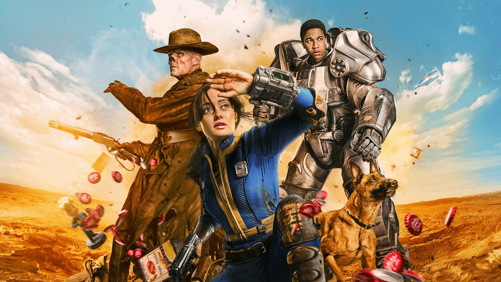

Fallout: A Post Nuclear Role Playing Game is a computer role-playing game developed by Interplay Entertainment and its division Dragonplay (later Black Isle Studios). It was published on October 10, 1997. The game received a direct sequel, Fallout 2.